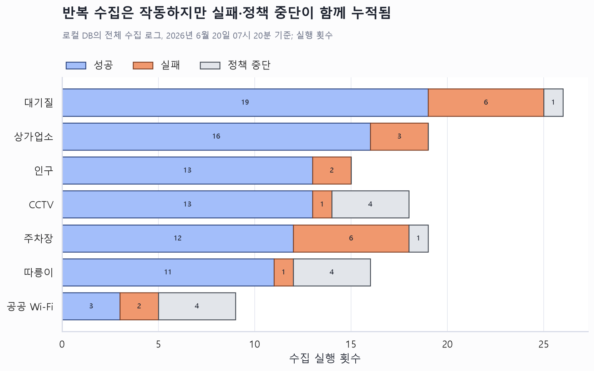
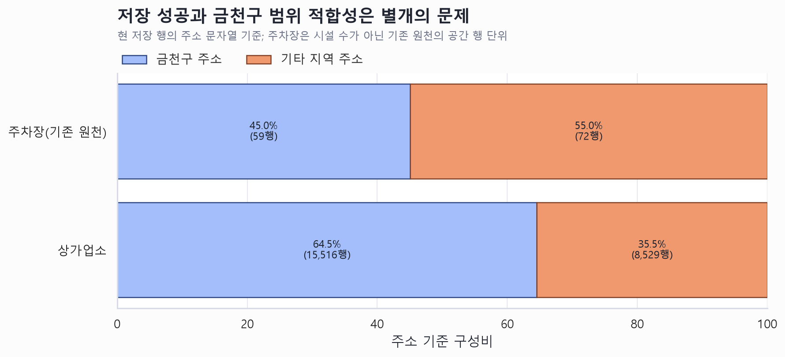

금천구 공공데이터 플랫폼 운영 우선순위
핵심 요약
- 공간 범위 교정을 완료했다. 행을 삭제하지 않고 GEUMCHEON / BORDER_AREA / EXTERNAL_REFERENCE로 분류했으며, 상가 24,045행은 금천구 15,516행과 경계 생활권 8,529행으로 나뉜다.
- 주차장 입자도 전환을 완료했다. 공식 시설 25건은
parking-lots, 구 공간 좌표 131건은parking-spaces로 분리해 독립 기준선으로 관리한다. - 수집기는 작동하지만 공개 신뢰 모델이 부족하다. 상가·대기질은 최신 실행이 성공했으나 인구·주차장은 실패했고, 따릉이·CCTV·Wi-Fi는 정책상 중단됐다. 화면에는 최신 시도와 마지막 정상 스냅샷을 분리해서 보여줘야 한다.
현재 상태를 결정하는 네 가지 숫자
GEUMCHEON
BORDER_AREA
독립 기준선
따릉이·CCTV API·공공 Wi-Fi
수집 성공만으로는 공개 가능한 데이터가 되지 않는다
로그 기준으로는 반복 수집이 상당 부분 성공했다. 그러나 성공 이력에는 개발 검증 실행이 섞여 있고, 현재 상태는 데이터셋마다 다르다. 대기질과 상가는 최신 실행이 성공했지만 주차장과 인구는 최신 실행이 실패했으며, 세 시설 데이터셋은 승인된 전송정책 때문에 건너뛰었다. 따라서 아래 그림은 SLA 달성률이 아니라 수집 경로의 안정성과 예외 유형을 읽는 근거다.

범위 밖 데이터를 지우지 않고 용도별로 분리했다
상가와 시설에 spatial_scope를 추가하고 GEUMCHEON / BORDER_AREA / EXTERNAL_REFERENCE로 분류했다. 공식 통계와 일반 공개 조회는 GEUMCHEON만 사용한다. 상권분석은 화면 기본값을 ‘금천구만’으로 두고 사용자가 선택할 때만 BORDER_AREA를 더하며, EXTERNAL_REFERENCE는 대사 목적으로만 보존한다.

주차장 품질 게이트 기준선을 입자도별로 분리했다
기존 131행은 11개 원천 ID에 여러 공간 좌표가 연결된 구 서울 원천이다. 신규 공공데이터포털 응답 25건은 주차장 시설 단위다. 승인된 마이그레이션은 전자를 parking-spaces, 후자를 parking-lots로 분리했다. 공식 25건은 모두 금천구 범위로 저장됐고, 참고 공간 131건은 삭제하지 않은 채 기본 공개 통계에서 제외했다.
개발 우선순위는 범위 교정 → 주차장 전환 → 운영 상태 모델 순이다
| 우선순위 | 작업 | 근거와 기대효과 | 완료 기준 |
|---|---|---|---|
| 완료 | 공간 범위 분류와 공개 기본값 | 외부 행을 보존하면서 공식 통계와 경계 생활권 분석을 분리한다. | 3단계 분류, 기본 GEUMCHEON, 상권 선택 조회, 회귀 테스트 완료 |
| 완료 | 주차장 원천·입자도 전환 | 시설 25건과 공간행 131건을 독립 데이터셋으로 분리했다. | 공식 25건 저장, 참고 131건 보존, 기본 조회 분리 완료 |
| P1 | 최신 시도/마지막 성공 분리 | 인구 시간초과와 주차장 게이트 실패가 정상 스냅샷 부재로 오해되는 것을 막는다. | 상태 API와 UI에 두 시각·상태·오류유형·지연시간 표시 |
| P1 | 수집정책·카탈로그 정합화 | CSV 운영 CCTV와 정책 중단 API를 구분하고, 실제 SLA와 화면의 ‘매일/수시’를 일치시킨다. | 자동/CSV/중단 상태 표준화, 데이터명·원천명·주기 일치 테스트 |
| P2 | 후보 3종 비공개 유지 | 무더위쉼터·어린이보호구역·전기차충전소는 확정 원천이 없고 현재 실행은 모두 실패했다. | 공식 원천·이용조건·담당자 승인 후에만 운영 카탈로그 승격 |
권장 실행 순서
- 공식 행정경계 도형으로 간이 경계를 교체한다. 현재 승인된 3단계 분류와 공개 기본값은 유지하고 경계 품질만 높인다.
- 주차장 두 기준선을 독립 운영한다. 공식 시설은
parking-lots, 구 공간 참고자료는parking-spaces안에서만 변동을 비교한다. - 운영 상태 모델을 고친 뒤 자동수집 범위를 넓힌다. 최신 시도 실패가 마지막 정상 데이터까지 무효화하지 않도록 API·관리자 화면·공개 화면에 동일한 상태 정의를 적용한다.
- 그 다음에 후보 데이터셋과 시각화 단계로 이동한다. 범위와 입자도가 정리되지 않은 상태에서 지표·차트를 늘리면 오류를 더 보기 좋게 포장할 뿐이다.
추가 확인이 결론을 바꿀 수 있는 항목
- 신규 주차장 25개 중 기존 11개 원천 ID와 동일하거나 명칭·주소가 유사한 시설은 몇 개인가?
- 따릉이·Wi-Fi에도 상권과 같은 경계 생활권 선택 UI를 제공할 필요가 있는가?
- CCTV 935건의 공개 위치 정밀도와 재배포 범위를 어느 부서가 최종 승인할지?
해석상 주의
이번 판단은 현재 로컬 DB와 저장소의 구현 상태를 기준으로 한다. 현재 행정경계는 프런트 동 경계를 합친 간이 경계이므로 공식 경계로 교체할 때 경계 인접 행을 재분류해야 한다. 운영 로그의 성공 비율은 개발 검증 실행이 섞여 있어 SLA 달성률이 아니다. 근거 정의와 재현 방법은 분석 근거 메모에 보존했다.